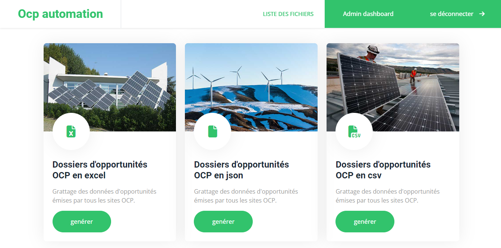

Welcome to OCP automation – your dedicated platform for precision
data extraction from the Portail-OCP website. Our sophisticated
system, powered by Python, Django, Selenium, celery , is designed
to reduce time and effort in multiple tasks related to data
retrieval and more.

Features
User Authentication:
- Create a secure account to access personalized features.
-
Log in securely to monitor and manage your data extraction
tasks.
Targeted Scraping and Automation:
-
Utilize specialized scraping techniques and custom automation
scripts to extract specific data from Portail-OCP.
-
Real-time updates ensure you stay informed about the progress of
your data extraction tasks.
File Format Flexibility:
-
Run automation scripts that generate diverse file formats, such
as xlsx and more, for convenient data organization and analysis.
- Download these files directly from your user profile.
Task Progress Tracking:
-
ransparently monitor the progress of your data extraction tasks.
How It Works
User Registration:
-
Create your account with ease, ensuring a secure and
personalized experience.
Data Extraction and Automation:
-
Run specific scraping and automation scripts customized for the
Portail-OCP website .
-
Observe the real-time progress of your data extraction tasks,
with detailed task summaries available in your user dashboard.
Retrieve Targeted Data:
-
Explore the curated results and download the extracted data.
Save Data and Analyze:
-
Save important data for future use directly from the extraction
results.
Preview
Github repo